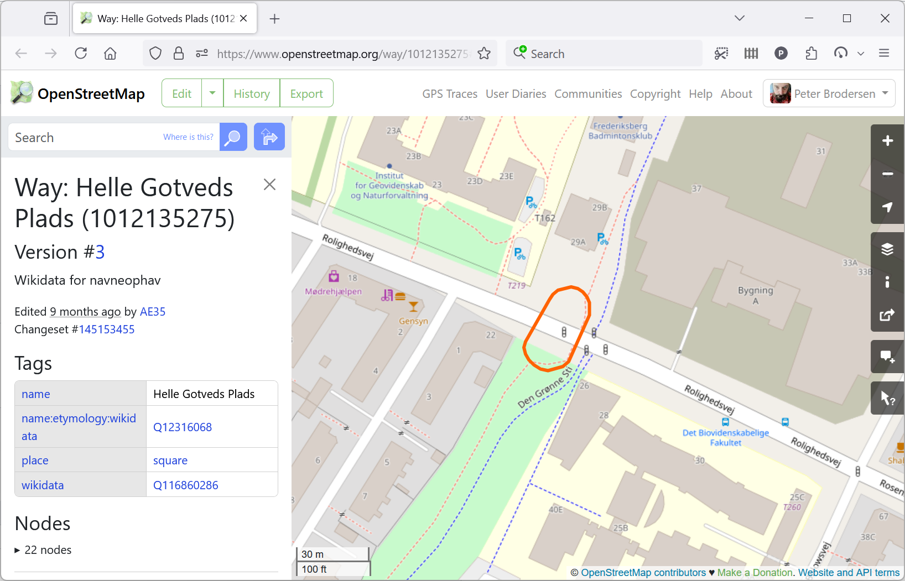
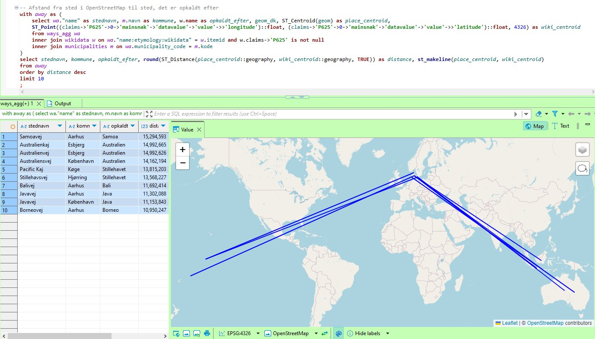
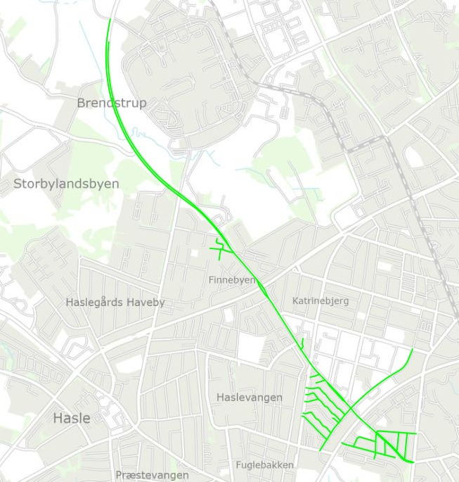

Ny åben database for, hvad danske vejnavne er opkaldt efter
Peter Brodersen, Septima
Kortdage, november 2025
Peter Brodersen, Septima
- Udvikler hos Septima P/S
- Frivillig bruger på Wikipedia og OpenStreetMap
- Ikke uddannet historiker (eller programmør)
- … og glad for data
Dagens emner
- Etymologi i OpenStreetMap
- Datagrundlag
- Muligheder med struktureret data
Etymologi i OpenStreetMap
Etymologi i OpenStreetMap
Etymologi i OpenStreetMap
OpenStreetMap
- Åbent og frit kort over hele verden
- Oprettet og vedligeholdt af frivillige, m.m.
- Vektorbaseret med nøgler og værdier
- Både fysiske karakteristika og metadata
Etymologi i OpenStreetMap
Etymologi i OpenStreetMap
OpenStreetMap
- Vejgeometri
- Navn
- Etymologi
- Fritekst
- Wikipedia-artikel
- Wikidata-emne
Ophav til vejnavn er angivet for over 45.000 veje i Danmark!
Etymologi i OpenStreetMap
OpenStreetMap - eksempel

Etymologi i OpenStreetMap
OpenStreetMap - eksempel
| Key | Value |
|---|---|
| name | Helle Gotveds Plads |
| name:etymology:wikidata | Q12316068 |
| place | square |
| wikidata | Q116860286 |
Etymologi i OpenStreetMap
Wikidata
Wikidata er emner med data som key⇒value
Helle Gotved (Q12316068):
| tilfælde af P31 | menneske Q5 |
| køn P21 | kvinde Q6581072 |
| beskæftigelse P106 | gymnastiklærer Q2312637 |
| beskæftigelse P106 | forfatter Q36180 |
| beskæftigelse P106 | gymnast Q16947675 |
| … | … |
Datagrundlag

Datagrundlag
- Bøger og fortegnelser
- Storbyens Stednavne, Lokalarkiver, websites
- Lokal kontekst
- Nykøbingvej, Kirkevej, Rådhuspladsen
- Navne med utvetydige emner
- Folke Bernadottes Alle, Ugandavej, Birkevej
Datagrundlag
Men hvad med …
- Lærkevej
- Holbergstien, Randers
- Amerikavej, København
- Vejlegade, Nakskov
- Ananasvænget, Odense
- Fuglebakken, Vordingborg
- Gåsestræde, Svendborg
- Hendriksholm, Rødovre
Datagrundlag
Hold tungen i munden!
Muligheder med struktureret data
Muligheder med struktureret data
Simple opsummeringer
| Mest brugte emne | birk (306) |
| Mest udbredte emne | birk (91 kommuner) |
| Mest udbredte person | N.F.S. Grundtvig (35 kommuner) |
| Mest udbredte nulevende person | Margrethe II (14 kommuner) |
| Mest udbredte person født i Esbjerg | John Tranum (2 kommuner) |
| Antal forskellige mennesker | 2.112 mennesker |
| Mest udbredte profession | Politiker (275 personer) |
Muligheder med struktureret data
Mere strukturerede opslag

Muligheder med struktureret data
Mere politiske opslag
| Kvinder med veje opkaldt efter sig | 466 kvinder |
| Mænd med veje opkaldt efter sig | 2.991 mænd |
| Forhold mellem kvinder og mænd | 13 % / 87 % |
| … der har eksisteret | 12 % / 88 % |
| Kommuner med steder opkaldt efter nazister (medlemmer af NSDAP eller DNSAP) |
Frederikshavn Tønder Aabenraa Helsingør (to tilfælde) |
Muligheder med struktureret data
Kvinder

Baggrundskort: Klimadatastyrelsen
Muligheder med struktureret data
Mænd

Baggrundskort: OpenStreetMap
Muligheder med struktureret data
Digtere

Baggrundskort: Klimadatastyrelsen
Muligheder med struktureret data
Total vejlængde i Danmark
- Kvinder: 341 km
- Mænd: 2.098 km
- Hankønsdyr: 10 km
- Hankønsdyr? Bambi, Fenrisulven, Grane og Pegasus
- Wikidata skelner imellem mænd, kvinder, hankøn og hunkøn
Muligheder med struktureret data
Opslag på kommuneniveau

Samarbejde om indhold
Samarbejde om indhold
- Fra OpenStreetMap til KDS …
- … og fra KDS til OpenStreetMap?
Spørgsmål?
Ressourcer
- navne.findvej.dk (Hvad er steder opkaldt efter?)
- Kønsfordeling på kommuneniveau
- Kilder og ressourcer, linkoversigt
- osmetymology (GitHub-projekt for website)
- OpenStreetMap
- Klimadatastyrelsen, punkt 11645658019
name:etymology:wikidata(kronologi)
- Wikidata
- Klimadatastyrelsen, emne Q29788118